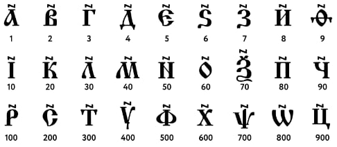

Начало
Непозиционная система счисления
— система, в которой значение цифры чётко определено и не зависит от её позиции в числе.
Одна из самых древних непозиционных систем счисления — древнеегипетская. Возникла она более трёх тысячелетий назад. В её основе — особые иероглифы для обозначения степеней числа 10.

Пример непозиционной системы счисления — древнеславянская, которую использовали наши предки. В качестве цифр использовались буквы, над которыми писали титло — знак, похожий на растянутую букву N.

Самая известная из непозиционных систем счисления — римская — используется и сейчас. Ей посвящена отдельная статья.
<--Назад